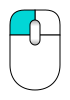
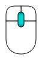
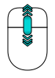
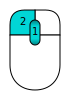
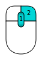
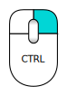
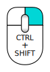
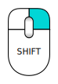

O FreeCAD é uma aplicação de modelação paramétrica 3D CAD/CAE . É primeiramente feita para desenho mecânico, mas também serve todos os outros usos onde seja necessário modelar objetos 3D com precisão e controlo sobre o processo/historial de modelação.
O FreeCAD continua numa fase inicial de desenvolvimento, pelo que, apesar de já oferecer uma larga lista (que continua a crescer) de funcionalidades, muito continua a faltar, especialmente quando comparado com soluções comerciais, pelo que pode não ser considerado suficientemente desenvolvido para utilização em ambiente de produção. Ainda assim, existe uma comunidade em rápido crescimento de utilizadores entusiastas, e podem ser já encontrados muitos exemplos de projetos de qualidade desenvolvidos com o FreeCAD.
Tal como todos os projetos "open-source", O projeto FreeCAD não é um trabalho entregue pelos desenvolvedores em sentido único. Ele depende muito da sua comunidade para crescer, ganhar funcionalidades, e estabilidade (corrigir de bugs). Por isso convém não esquecer, quando começar a usar o FreeCAD, se gostar de trabalhar com ele, pode influenciar diretamente e ajudar o projeto!
Antes de mais (se ainda não o fez) transfira e instale o FreeCAD. Veja a página Transferir para informações acerca das versões mais recentes e atualizações, e a pagina instalação para informação sobre como instalar o FreeCAD. Existem pacotes de instalação prontos para o Windows (.msi), Ubuntu e Debian (.deb) openSUSE (.rpm) e Mac OSX. Como o FreeCAD é open-source, se for aventureiro, e quiser ver as funcionalidades novinhas em folha que estão a ser desenvolvidas mesmo agora, pode também descarregar o código fonte e compilar o FreeCAD.
O conceito principal por detrás da interface do FreeCAD é a separação em bancadas de trabalho. Uma bancada de trabalho é uma coleção de ferramentas ajustadas a uma tarefa especifica, tal como trabalhar com malhas (meshes), ou desenhar objetos 2D (traços), ou esboços restringidos (sketches). Pode mudar a bancada de trabalho ativa com o seletor de bancadas de trabalho(6). Pode personalizar as ferramentas incluídas em cada bancada de trabalho, adicionar ferramentas de outras bancadas de trabalho ou mesmo ferramentas criadas por si, que nós chamamos macros. Existe também uma bancada de trabalho generica que abarca as ferramentas mais comunmente utilizadas das outras bancadas, chamada bancada de trabalho complete.
Quando você inicia o FreeCAD, pela primeira vez, é apresentada a página inicial do FreeCAD:
A página inicial do FreeCAD permite saltar rapidamente para uma das bancada de trabalho mais comuns, abrir um dos ficheiros recentes , ou ver as últimas notícias do universo FreeCAD. Pode alterar a bancada de trabalho predefinida em preferências.
O FreeCAD tem disponíveis quatro diferentes modos de navegação, estes alteram a forma como usa o seu rato para interagir com os objetos nas vista 3D ou com a própria vista. Um deles foi especificamente feito para touchpads, onde o botão do meio do rato não é utilizado. A tabela seguinte descreve o modo predefinido, chamado Navegação CAD (Pode mudar rapidamente o modo de navegação clicando com o botão direito do rato numa área vazia da vista 3D):
| Select | Pan | Zoom | Rotate View | Rotate View
Alternate Method |
|---|---|---|---|---|
|  |  |  |  |  |
| Press the left mouse button over an object you want to select. Holding down ctrl allows the selection of multiple objects. | Click the middle mouse button and move the object around to pan | Use the mouse wheel to zoom in and out. Clicking the middle mouse button re-centers the view to the location of the cursor. | Click first with the middle mouse button, hold it down, and then click the left mouse button and drag the mouse in the desired direction. The cursor location at the middle mouse button click determines the center of rotation. Rotation works like spinning a ball which rotates around its center. If the buttons are released before you stop the mouse motion, the object continues spinning, if this is enabled. A double click with the middle mouse button sets a new center of rotation. | Click first with the middle mouse button, hold it down, and then click the right mouse button and drag the mouse in the desired direction. This method works just like the previously described Rotate View that uses Middle Mouse Button + Left Mouse Button, except that the middle mouse button may be released after the right mouse button is pressed. Users who use the mouse with their right hand may find this Rotate View method easier than the previous method. |
|  |  |  | ||
| For the Pan mode, press the Ctrl key and press the right mouse button to pan (rev 0.17) | For the Zoom mode, press the Ctrl and Shift key and press the right mouse button to Zoom (rev 0.17) | For the Rotate mode, press the Shift key and press the right mouse button to rotate (rev 0.17) |
Existem também diversas vistas predefinidas (vista de cima, vista de frente, etc) disponíveis no menu ver e na barra de ferramentas Ver, e através de atalhos numéricos (1, 2, etc...), ou clicando com o botão direito do rato num objeto ou numa área vazia da vista 3D, o que dá acesso rápido a algumas operações, como especificar uma determinada vista ou localizar um objeto na vista de árvore.
O objetivo do FreeCAD é permitir fazer modelos 3D de alta precisão, manter o controlo apertado destes modelos (sendo capaz recuar no histórico da modelação e alterar parâmetros), para eventualmente construir esses modelos (via 3D printing, maquinação CNC ou até construção em estaleiro). É portanto muito diferente de algumas outras aplicações 3D feitas com outros propósitos, tais como animação ou jogos. A sua curva de aprendizagem pode ser íngreme, especialmente se for o seu primeiro contacto com a modelação 3D. Se ficar encalhado em certo ponto, não se esqueça da comunidade amigável de utilizadores no FreeCAD forum que será capaz de o ajudar rapidamente.
A bancada de trabalho que começará a utilizar depende do tipo de trabalho que precisa de fazer: se vai trabalhar em modelos de mecânica, ou mais genericamente quaisquer objetos de pequena escala, vai querer provavelmente experimentar a Bancada de trabalho PartDesign (desenho de peças) . Se vai trabalhar em 2D, então mude para a bancada de trabalho Draft (traço) , ou a bancada de trabalho Sketch (esboço) se precisar de restrições. Se quer fazer BIM, lance a Bancada de trabalho Arch (arquitetura). Se trabalha em desenho de barcos, existe a bancada especial Bancada de trabalho Ship para si. E se vem do universo do OpenSCAD, experimente a bancada de trabalho OpenSCAD.
Pode alternar bancadas de trabalho a qualquer altura, e também personalizar a sua bancada de trabalho favorita adicionando ferramentas de outras bancadas de trabalho.
A Bancada de trabalho PartDesign (Desenho de peças) está especialmente talhada para a construção de objetos complexos, a aprtir de formas simples, e adicionando ou removendo peças (que nós chamamos "features"), até conseguir obter o objeto final. Todas as "features" aplicadas durante o processo de modelação são guardadas numa vista separada chamada vista em árvore, que também contem outros objetos do documento. Podemos pensar no "PartDesign" como uma sucessão de operações, cada uma aplicada sobre o resultado da precedente, formando uma grande cadeia. Na vista em árvore , pode-se ver o objeto final, mas pode expandir-se e alcançar todos as fases anteriores, e alterar qualquer dos seus parâmetros, atualizando automaticamente o objeto final.
A bancada de trabalho "PartDesign" faz uso intensivo de outra bancada de trabalho, A Bancada de trabalho Sketcher (esboço). Esta permite desenhar formas 2D, que são definidas aplicando restrições à forma 2D. Por exemplo, pode desenhar um retângulo e definir o tamanho de um lado aplicando uma restrição de comprimento a um dos lados. Esse lado deixa de puder ser redimensionado (a menos que a restrição seja alterada).
Estas formas 2D feitas com o "sketcher" são muito usadas na bancada de trabalho "PartDesign", por exemplo para criar um volume 3D , ou para desenhar áreas nas faces de objetos que serão depois escavadas ao volume principal. Este é um fluxo de trabalho típico do "PartDesign":
Obtendo um objeto como este:
A qualquer altura, pode selecionar o sketch (esboço) original e modificá-lo, ou alterar os parâmetros de extrusão das operações "pad" ou "pocket", atualizando assim o objeto final.
As bancadas de trabalho "Draft" (traço) e Bancada de trabalho "Arch" (arquitetura) comportam-se de forma um pouco diferente das bancadas de trabalho acima descritas, ainda assim seguem as mesmas regras, que são comuns a todo o FreeCAD. Resumindo, enquanto o "Sketcher" e "PartDesign" são feitas principalmente para desenhar peças individuais , "Draft" e "Arch" são feitas para facilitar, quando se trabalha, com diversas peças mais simples.
A Bancada de trabalho Draft (traço) oferece ferramentas 2D parecidas com as que se encontram nas aplicações CAD tradicionais como o AutoCAD. Contudo , O desenho 2D está longe de ser o objetivo do FreeCAD, por isso, não espere encontrar o conjunto completo de ferramentas que essas aplicações dedicadas oferecem. Muitas das ferramentas do "Draft" funcionam não só em 2D como na totalidade do espaço 3D, e beneficia de um sistema de ajuda especial como o Planos de trabalho e "object snapping".
A bancada de trabalho "Arch" (Arquitetura) acrescenta ferramentas BIM ao FreeCAD, permitindo construir modelos de arquitetura com objetos paramétricos. A bancada de trabalho "Arch" (Arquitetura) depende muito de outros módulos como o "Draft" (traço) e "Sketcher" (esboço). Todas as ferramentas do "Draft" estão também presentes bancada de trabalho "Arch" (Arquitetura), e muitas ferramentas "Arch" fazem uso dos sistemas de apoio e ajuda do "Draft".
O fluxo de trabalho típico com a as bancadas de trabalho "Arch" (Arquitetura) e "Draft" (traço) será:
Obtendo isto:
Mais em Tuturials.
E finalmente, um dos recursos mais poderoso do FreeCAD é o ambiente de programação (scripting). Desde da consola python integrada (ou a partir de qualquer outro script Python externo), pode obter acesso a praticamente qualquer parte do FreeCAD, criar ou modificar geometria, modificar a apresentação desses objetos na cena 3D ou aceder e modificar a interface do FreeCAD. Programação Python pode também ser usada em macros, que proporcionam um método fácil de criar comandos personalizados.
{kind=link}
{kind=link}
{kind=link}
{kind=link}
{kind=link}
{kind=link}
{kind=link}
{kind=link}
{kind=link}
{kind=link}
{kind=link}
{kind=link}
{kind=link}
{kind=link}
{kind=link}
{kind=link}